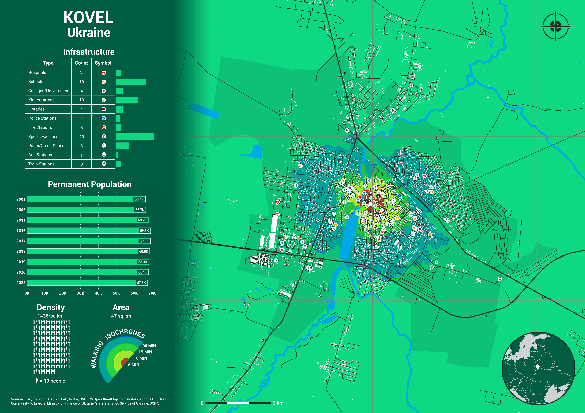

Project information
- Name: Kovel Infrastructure Map
- Creation date: 21th March, 2025
- Software: ArcGIS Pro, PostGIS, QGIS, Microsoft PowerBI, Microsoft Excel, Tableau, Adobe Illustrator
- Source: Esri, FAO, OCHA, USGS, OpenStreetMap, Wikipedia, Ministry of Finance of Ukraine, State Statistics Service of Ukraine
- Description: Kovel is a medium-sized city in northwestern Ukraine, occupying an area of 47 square kilometers with a population of approximately 67,600 as of 2022. This results in a population density of around 1,438 people per square kilometer. The map highlights Kovel’s extensive infrastructure, stable population, and dense urban structure, suggesting it plays a regional administrative and economic role. Its highly accessible services and developed transport network contribute to its function as a vital urban hub in the Volyn region.
- Kovel stands out with a diverse and extensive infrastructure network. A broad range of public services reflects Kovel’s strategic importance and relatively high quality of life. The density of educational institutions, healthcare, and transport hubs supports both residents and neighboring rural populations.
- Most infrastructure is concentrated in the central part of the city, within the 5-minute walking isochrone (red zone), ensuring excellent accessibility for most residents. The presence of train and bus stations also indicates strong regional connectivity, which is crucial for trade, commuting, and mobility.
- Kovel’s population has remained remarkably stable over two decades. Unlike many post-Soviet cities, Kovel has not seen significant population loss. Minor fluctuations suggest the city may be resilient to emigration pressures and could maintain or grow its population base, especially with continued infrastructure development and economic opportunity.
- Kovel’s structured road network, large number of apartment blocks, and concentration of amenities all point to a well-planned city layout with relatively compact housing and functional land use.
- The walking isochrones clearly show Kovel's compact, walkable core, surrounded by residential zones with gradually decreasing density. The 15- and 30-minute zones reach into industrial and agricultural outskirts yet remain connected via major roads and public transit.
- This walkability is a major asset, especially when paired with public transport options like bus and train stations. Kovel’s multi-modal transport structure allows residents to commute both locally and regionally, enhancing economic integration.
- Kovel is bisected by a river and surrounded by streams, wetlands, and forested zones, giving it a natural character and potential for green space expansion. The rail and road arteries running east-west and north-south position the city as a key transport and logistics center. This natural and infrastructural integration creates a balanced environment—urban enough to provide services, but green enough to ensure livability.